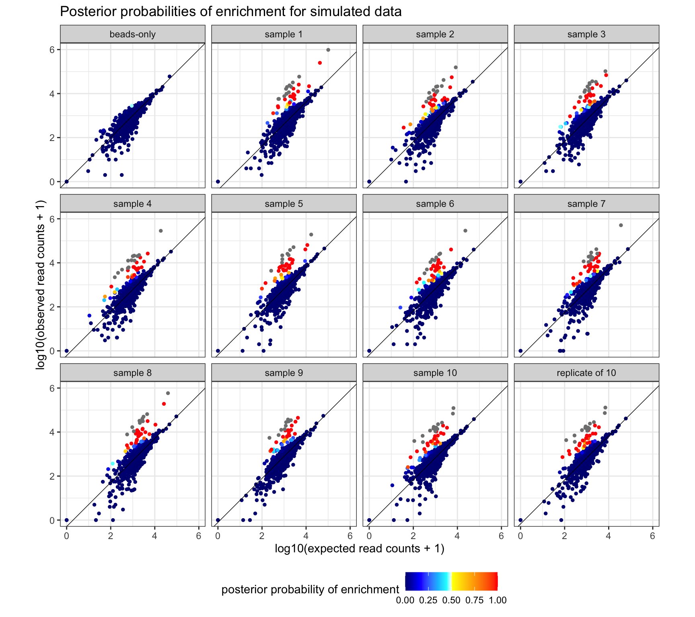

Simulated Data
Last updated: 2021-09-15
Checks: 7 0
Knit directory: beer_manuscript/
This reproducible R Markdown analysis was created with workflowr (version 1.6.2). The Checks tab describes the reproducibility checks that were applied when the results were created. The Past versions tab lists the development history.
Great! Since the R Markdown file has been committed to the Git repository, you know the exact version of the code that produced these results.
Great job! The global environment was empty. Objects defined in the global environment can affect the analysis in your R Markdown file in unknown ways. For reproduciblity it’s best to always run the code in an empty environment.
The command set.seed(20210907) was run prior to running the code in the R Markdown file. Setting a seed ensures that any results that rely on randomness, e.g. subsampling or permutations, are reproducible.
Great job! Recording the operating system, R version, and package versions is critical for reproducibility.
Nice! There were no cached chunks for this analysis, so you can be confident that you successfully produced the results during this run.
Great job! Using relative paths to the files within your workflowr project makes it easier to run your code on other machines.
Great! You are using Git for version control. Tracking code development and connecting the code version to the results is critical for reproducibility.
The results in this page were generated with repository version 26ee6f3. See the Past versions tab to see a history of the changes made to the R Markdown and HTML files.
Note that you need to be careful to ensure that all relevant files for the analysis have been committed to Git prior to generating the results (you can use wflow_publish or wflow_git_commit). workflowr only checks the R Markdown file, but you know if there are other scripts or data files that it depends on. Below is the status of the Git repository when the results were generated:
Ignored files:
Ignored: .DS_Store
Ignored: .Rhistory
Ignored: .Rproj.user/
Ignored: analysis/.DS_Store
Ignored: analysis/partials/.DS_Store
Ignored: data_processed/.DS_Store
Ignored: data_processed/simulation_2beads_mle/.DS_Store
Ignored: data_processed/simulation_2beads_mom/.DS_Store
Ignored: data_processed/simulation_2beads_truth/.DS_Store
Ignored: data_processed/simulation_4beads_edgeR/.DS_Store
Ignored: data_processed/simulation_curves.rda
Ignored: figures/.DS_Store
Unstaged changes:
Modified: R/figure_hiv.R
Modified: README.Rmd
Note that any generated files, e.g. HTML, png, CSS, etc., are not included in this status report because it is ok for generated content to have uncommitted changes.
These are the previous versions of the repository in which changes were made to the R Markdown (analysis/simulation.Rmd) and HTML (docs/simulation.html) files. If you’ve configured a remote Git repository (see ?wflow_git_remote), click on the hyperlinks in the table below to view the files as they were in that past version.
| File | Version | Author | Date | Message |
|---|---|---|---|---|
| html | e30784b | Athena Chen | 2021-09-14 | Build site. |
| Rmd | a0d5332 | Athena Chen | 2021-09-14 | wflow_publish(files = list.files(“analysis/”, pattern = “.Rmd”, |
| html | 4984369 | Athena Chen | 2021-09-14 | Build site. |
| Rmd | 06e8f65 | Athena Chen | 2021-09-14 | wflow_publish(files = list.files(“analysis/”, pattern = “.Rmd”, |
| html | 34893c7 | Athena Chen | 2021-09-14 | Build site. |
| Rmd | 667d1af | Athena Chen | 2021-09-14 | Added simulation output |
| html | 667d1af | Athena Chen | 2021-09-14 | Added simulation output |
Simulated Data
We simulated ten data sets based on read count data from beads-only samples run with HIV elite controllers. Each data set consists of eight beads-only samples and twelve simulated serum samples. Of the twelve samples, one sample is a beads-only sample that has been run as a serum sample, and two samples are replicates generated from the same parameters with some error.
For all generated serum sample, we randomly select 50 peptides to be enriched. We set the fold-changes for enriched peptides such that there were 10 peptides in each of the following intervals: 1 to 2, 2 to 4, 4 to 8, 8 to 16, and 16 to 32.
#' Code to load required packages to reproduce the results and figures in
#' the manuscript.
required_packages <- c('plyr', 'tidyverse', 'here', 'ggpubr', 'gridExtra',
'latex2exp', 'kableExtra', 'RColorBrewer', 'BiocManager')
for (pkg in required_packages) {
if (!(pkg %in% rownames(installed.packages()))) {
install.packages(pkg)
}
library(pkg, character.only = TRUE)
}
bioc_packages <- c("beer")
for(pkg in bioc_packages){
if(!(pkg %in% rownames(installed.packages()))) {
BiocManager::install(pkg)
}
library(pkg, character.only = TRUE)
}
rm(list = c("required_packages", "bioc_packages", "pkg"))
#' Define global variables for plotting
hot_cold_cols <- c("navy", "blue", "deepskyblue", "cyan", "lightcyan",
"yellow", "orange", "red")#' Function to generate simulated data sets based on HIV EC beads-only samples.
#'
#' @param seed RNG seed
#' @return PhIPData object with the true parameters saved in assays/metadata
simulate_data <- function(seed){
set.seed(seed)
## Read-in HIV EC data
hiv <- readRDS(here("data_raw", "hiv.rds"))
## Constants
N <- 20
P <- 1000
B <- c(rep(1, 9), rep(0, 11))
n <- round(abs(rnorm(N, 1e6, 1e5)))
## Beads-only parameters, sort peptides by proportion
beads_params <- getAB(subsetBeads(hiv[1:P, ]), lower = 1) %>%
as_tibble() %>%
mutate(mean = a_0/(a_0 + b_0)) %>%
arrange(mean)
a_0 <- beads_params$a_0
b_0 <- beads_params$b_0
## Proportion of peptides enriched
Z <- cbind(matrix(0, nrow = P, ncol = 9),
sapply(1:10, function(x) sample(c(rep(1, 50), rep(0, P - 50)))))
pi <- colMeans(Z)
## Fold-changes
## - 10 peptides with fc between 1-2
## - 10 peptides with fc between 2-4
## - 10 peptides with fc between 4-8
## - 10 peptides with fc between 8-10
## - 10 peptides with fc between 16-32
## Arrange the enriched peptides so that they are spaced across the range of
## proportion of reads pulled
phi <- apply(Z, 2, function(x) {
phi_j <- rep(1, P)
phi_cat <- as.vector(matrix(c(runif(10, 1, 2), runif(10, 2, 4),
runif(10, 4, 8), runif(10, 8, 16),
runif(10, 16, 32)),
nrow = 5, byrow = TRUE))
phi_j[which(x!= 0)] <- phi_cat
phi_j
})
## Duplicate last column for sample 20, add small noise for fc.
Z <- cbind(Z, Z[, N - 1])
pi <- c(pi, pi[N - 1])
phi <- cbind(phi, phi[, 19] + rnorm(P, 0, 0.01)*Z[, 19])
## Generate remaining parameters
a <- matrix(NA, nrow = P, ncol = N)
b <- matrix(NA, nrow = P, ncol = N)
theta <- matrix(NA, nrow = P, ncol = N)
Y <- matrix(NA, nrow = P, ncol = N)
for(j in 1:N){
for(i in 1:P) {
if (Z[i, j] == 1 & B[j] == 0) {
mean_e <- min(phi[i, j]*a_0[i]/(a_0[i] + b_0[i]), 1)
var_e <- a_0[i]*b_0[i]/((a_0[i] + b_0[i])^2*
(a_0[i] + b_0[i] + 1))
a[i, j] <- max((1-mean_e)*mean_e^2/var_e - mean_e, 1)
b[i, j] <- a[i, j]*(1/mean_e - 1)
} else if (Z[i, j] == 0 & B[j] == 1) {
a[i, j] <- a_0[i]
b[i, j] <- b_0[i]
} else {
mean_ne <- a_0[i]/(a_0[i] + b_0[i])
var_ne <- (a_0[i]*b_0[i])/((a_0[i]+b_0[i])^2*
(a_0[i] + b_0[i] + 1))
a[i, j] <- max((1-mean_ne)*mean_ne^2/var_ne - var_ne, 1)
b[i, j] <- a[i, j]*(1/mean_ne - 1)
}
theta[i, j] <- rbeta(1, a[i, j], b[i, j])
if(is.na(theta[i, j])){
print(paste0("Sample ", j, " and peptide ", i,
" failed to create theta."))
}
Y[i, j] <- rbinom(1, n[j], theta[i, j])
}
}
## Define new n
n_init <- n
n <- colSums(Y)
## Define estimate of c
c <- sapply(1:N, function(x){
if(x %in% 10:N) {
ne_index <- which(Z[, x] == 0)
data_sub <- data.frame(Y = Y[ne_index, x],
expected_rc = a_0[ne_index]/
(a_0[ne_index] + b_0[ne_index])*n[x])
lm_fit <- lm(Y ~ expected_rc - 1, data = data_sub)
coef(lm_fit)[[1]]
} else 1
})
## Create PhIPData object
sample_params <- data.frame(group = c(rep("beads", sum(B) - 1),
rep("sample", N - sum(B) + 1)),
n_init = n_init, n = n,
true_c = c, true_pi = pi)
pep_params <- data.frame(a_0 = a_0, b_0 = b_0)
prior_params <- list(seed = seed,
a_pi = 1000, b_pi = 2.4e4,
a_phi = 1.25, b_phi = 0.1,
a_c = 33.02, b_c = 17.92,
fc = 1)
sim_data <- PhIPData(counts = Y,
peptideInfo = pep_params,
sampleInfo = sample_params,
metadata = prior_params)
assays(sim_data)[c("true_Z", "true_phi", "true_a",
"true_b", "true_theta")] <-
list(true_Z = Z, true_phi = phi, true_a = a,
true_b = b, true_theta = theta)
sim_data
}num_sims <- 10
set.seed(20210223)
sim_seeds <- c(20210223, sample(-1e6:1e6, num_sims - 1))
sim_data <- lapply(sim_seeds, simulate_data)For example, we can visualize the first simulated data set by plotting the expected versus the observed read counts.
sample_names <- c(
paste0("Beads ", 1:8),
paste0("Sample ", 1:11),
"Replicate of Sample 11"
)
names(sample_names) <- 1:20
sim_data[[1]] %>%
as("DataFrame") %>%
as_tibble() %>%
group_by(peptide) %>%
mutate(expected_prop = mean((counts/n)[group == "beads"]),
expected_rc = n*expected_prop,
phi_cat = case_when(true_phi == 1 ~ "not enriched",
true_phi <= 2 ~ "1<phi<=2",
true_phi <= 4 ~ "2<phi<=4",
true_phi <= 8 ~ "4<phi<=8",
true_phi <= 16 ~ "8<phi<=16",
TRUE ~ "16<phi<=32"),
sample = factor(sample, levels = 1:20)) %>%
arrange(true_phi) %>%
ggplot(aes(x = log10(expected_rc + 1),
y = log10(counts + 1),
color = phi_cat)) +
geom_point(alpha = 0.75, size = 0.75) +
geom_abline(aes(slope = 1, intercept = log10(true_c)),
color = "black", size = 0.25) +
facet_wrap(sample ~., ncol = 4,
labeller = labeller(sample = sample_names)) +
scale_color_manual(values = c("grey", brewer.pal(6, "Reds")[-1]),
breaks = c("not enriched", "1<phi<=2", "2<phi<=4",
"4<phi<=8", "8<phi<=16", "16<phi<=32"),
labels = unname(TeX(c(
"not enriched",
"$1<\\phi_{ij}\\leq 2$",
"$2<\\phi_{ij}\\leq 4$",
"$4<\\phi_{ij}\\leq 8$",
"$8<\\phi_{ij}\\leq 16$",
"$16<\\phi_{ij}\\leq 32$")))) +
labs(title = "Simulated Data Set 1",
x = "log10(expected read count + 1)",
y = "log10(observed read count + 1)",
color = "FC category") +
theme_bw() +
theme(legend.text.align = 0)
| Version | Author | Date |
|---|---|---|
| 667d1af | Athena Chen | 2021-09-14 |
Running BEER and edgeR
Each simulated data set was run using the first two, four, and all eight beads-only samples. For each simulated data set and subset of beads-only samples, we ran edgeR and BEER using MLE, MOM, and edgeR estimates for \(a_0, b_0\) and the true values of \(a_0, b_0\).
The simulations were run on a cluster using this R script. The resulting PhIPData objects are stored in the repository folders named data_processed/simulation_xbeads_method. The folders are named such that x indicates the number of beads-only samples used for both BEER and edgeR and method is the method used to define \(a_0, b_0\) for BEER.
source(here("R", "load_packages.R"))
sim_dirs <- list.files("data_processed", "simulation_[0-9]", full.names = TRUE)
sim_list <- sapply(sim_dirs, list.files, full.names = TRUE) %>% as.vector()
# Read and tidy data ---------
sim_data <- lapply(sim_list, function(sim_num){
# Extract setting (data set, # beads used, method of estimating a_0, b_0)
data_num <- str_match(sim_num, "sim_([0-9]*)\\.rds")[, 2] %>% as.numeric()
num_beads <- str_match(sim_num, "([0-9])beads")[, 2] %>% as.numeric()
ab_method <- str_match(sim_num, "[0-9]beads_(.*)/")[, 2]
# Read in data
all_results <- readRDS(sim_num)
N <- ncol(all_results)
P <- nrow(all_results)
B <- sum(all_results$group == getBeadsName())
n <- librarySize(all_results)
a_pi <- metadata(all_results)$a_pi
b_pi <- metadata(all_results)$b_pi
a_c <- metadata(all_results)$a_c
b_c <- metadata(all_results)$b_c
a_phi <- metadata(all_results)$a_phi
b_phi <- metadata(all_results)$b_phi
a_0 <- peptideInfo(all_results)$a_0
b_0 <- peptideInfo(all_results)$b_0
pi <- all_results$pi
c <- all_results$c
Z <- assay(all_results, "true_Z")
phi <- assay(all_results, "true_phi")
a <- assay(all_results, "true_a")
b <- assay(all_results, "true_b")
theta <- assay(all_results, "true_theta")
Y <- counts(all_results)
# Arrange in a df
data.frame(sim_num = data_num,
num_beads = num_beads,
ab_method = ab_method,
sample = rep(1:N, each = P),
peptide = rep(1:P, times = N),
n = rep(n, each = P),
c = rep(c, each = P),
a_0 = a_0,
b_0 = b_0,
phi = as.vector(phi),
Z = as.vector(Z),
Y = as.vector(Y),
post_prob = as.vector(assay(all_results, "beer_prob")),
est_phi = as.vector(assay(all_results, "beer_fc")),
est_phiZ = as.vector(assay(all_results, "beer_fcZ")),
edgeR_fc = as.vector(assay(all_results, "edgeR_logfc")),
edgeR_pval = as.vector(assay(all_results, "edgeR_prob"))) %>%
mutate(is_se = ifelse(is.na(post_prob & sample %in% (B+1):N), 1, 0),
post_prob = ifelse(is_se, 1, post_prob),
pred_enriched = ifelse(post_prob > 0.5, 1, 0)) %>%
group_by(peptide) %>%
mutate(expected_prop = mean(Y[sample %in% 1:B]/n[sample %in% 1:B]),
expected_rc = expected_prop*n) %>%
ungroup()
})
names(sim_data) <- sim_list
# Clean-up variable space
rm(list = ls()[ls() != "sim_data"])Comparison of BEER and edgeR
Algorithm performance was primarily assessed using ROC and PR curves on the full data and fold-change subsets of the data. For each fold-change group, curves were generated using all non-enriched peptides and enriched peptides within the specified fold-change group from the simulated serum samples (no peptides from beads-only samples were included). The area under each ROC curve was approximated using trapezoidal approximation from the interpolated data points.
Simulation results for each combination of beads-only samples used (2 vs. 4 vs. 8), method (BEER vs. edgeR), and estimation approach of \(a_0, b_0\) for BEER (edgeR, MOM, MLE, and truth) were summarized as follows. To ensure that all curves had the same support points, we used linear interpolation to approximate the sensitivity or positive predictive value at each support point for each simulation. ROC curves started at 0 sensitivity and 0 false-positive rate, while PRC curves started at 0 sensitivity and perfect positive-predictive value. The interpolated curves were averaged point-wise to generate an average curve for each condition.
#' load_curves.R
#'
#' Code to process and load sens/spec/ppv data.
# Set-up ----------
source(here("R", "load_simulations.R"))
source(here("R", "helper_functions.R"))
# Create ROC/PRC data for each data set and simulation condition ------------
# Note: the following code takes a while to run.
fc_thresholds <- c(1, 2, 4, 8, 16, 32, NA)
beer_roc_by_fc <- lapply(sim_data, function(sim){
roc_by_fc <- map_dfr(2:length(fc_thresholds), function(pos){
fc_min <- ifelse(is.na(fc_thresholds[pos]), 1, fc_thresholds[pos - 1])
fc_max <- ifelse(is.na(fc_thresholds[pos]), 32, fc_thresholds[pos])
n_beads <- unique(sim$num_beads)
n_samples <- max(sim$sample)
sim %>%
filter(((phi <= fc_max & phi > fc_min) | Z == 0) &
(sample %in% seq(n_beads + 1, n_samples))) %>%
select(post_prob, Z) %>%
dplyr::rename(prop_enriched = post_prob) %>%
get_roc(., min_cutoff = 0, max_cutoff = 1 + 1e-6) %>%
mutate(approach = "BEER",
sim_num = unique(sim$sim_num),
num_beads = n_beads,
ab_method = unique(sim$ab_method),
group = ifelse(is.na(fc_thresholds[pos]), "full data",
paste0(fc_min, "<phi<=", fc_max)))
}) %>%
mutate(group_lab = factor(group,
levels = c("full data", "1<phi<=2", "2<phi<=4",
"4<phi<=8", "8<phi<=16", "16<phi<=32"),
labels = c(TeX("full data"),
TeX("$1<\\phi_{ij}\\leq 2$"),
TeX("$2<\\phi_{ij}\\leq 4$"),
TeX("$4<\\phi_{ij}\\leq 8$"),
TeX("$8<\\phi_{ij}\\leq 16$"),
TeX("$16<\\phi_{ij}\\leq 32$"))))
}) %>% plyr::ldply(.id = NULL)
# edgeR is run with every BEER condition (i.e. MLE/MOM/edgeR and 2, 4, 8
# beads-only samples) so to avoid duplication, we just use the edgeR output
# from the "truth" runs for 2, 4, and 8 beads-only samples.
edgeR_roc_by_fc <- lapply(sim_data[grepl("truth", names(sim_data))], function(sim){
roc_by_fc <- map_dfr(2:length(fc_thresholds), function(pos){
fc_min <- ifelse(is.na(fc_thresholds[pos]), 1, fc_thresholds[pos - 1])
fc_max <- ifelse(is.na(fc_thresholds[pos]), 32, fc_thresholds[pos])
n_beads <- unique(sim$num_beads)
n_samples <- max(sim$sample)
sim %>%
filter(((phi <= fc_max & phi > fc_min) | Z == 0) &
(sample %in% seq(n_beads + 1, n_samples))) %>%
select(edgeR_pval, Z) %>%
dplyr::rename(prop_enriched = edgeR_pval) %>%
get_roc(., min_cutoff = 0, max_cutoff = max(.$prop_enriched)) %>%
mutate(approach = "edgeR",
sim_num = unique(sim$sim_num),
num_beads = n_beads,
ab_method = unique(sim$ab_method),
group = ifelse(is.na(fc_thresholds[pos]), "full data",
paste0(fc_min, "<phi<=", fc_max)))
}) %>%
mutate(group_lab = factor(group,
levels = c("full data", "1<phi<=2", "2<phi<=4",
"4<phi<=8", "8<phi<=16", "16<phi<=32"),
labels = c(TeX("full data"),
TeX("$1<\\phi_{ij}\\leq 2$"),
TeX("$2<\\phi_{ij}\\leq 4$"),
TeX("$4<\\phi_{ij}\\leq 8$"),
TeX("$8<\\phi_{ij}\\leq 16$"),
TeX("$16<\\phi_{ij}\\leq 32$"))))
}) %>% plyr::ldply(.id = NULL)
roc_by_fc <- bind_rows(beer_roc_by_fc, edgeR_roc_by_fc) %>%
mutate(method = ifelse(approach == "edgeR", "edgeR", paste0(approach, "_", ab_method)),
method = factor(method,
levels = c("BEER_truth", "BEER_mom", "BEER_mle",
"BEER_edgeR", "edgeR")))
# Average individual curves -----------
# Remote fc > 16 since the curves are essentially perfect which causes problems
# for interpolation.
interpolate <- roc_by_fc %>%
filter(group!= "16<phi<=32") %>%
group_by(sim_num, group, group_lab, method, num_beads) %>%
group_split() %>%
map_dfr(function(sub_df){
specm_range <- seq(0, 1, by = 0.01)
sens_approx <- approx(c(0, 1 - sub_df$spec, 1),
c(0, sub_df$sens, 1), specm_range,
yleft = 0, yright = 1, rule = 1)$y
ppv_approx <- approx(c(0, sub_df$sens),
c(1, sub_df$ppv), specm_range,
yleft = 1, yright = 0, rule = 1)$y
data.frame(sim_num = unique(sub_df$sim_num),
group = unique(sub_df$group),
group_lab = unique(sub_df$group_lab),
method = unique(sub_df$method),
num_beads = unique(sub_df$num_beads),
x = specm_range,
sens = sens_approx,
ppv = ppv_approx)
})
save.image("data_processed/simulation_curves.rda")In addition to assessing the performance of each algorithm by discrete fold-change categories, we modeled the probability of identifying an enriched peptide by fold-change and reads pulled per million using results from one simulated data set. Posterior probability and p-value cutoffs for enrichment were selected to ensure an FDR of at most 0.05. Additionally, we used logistic regression to model the probability of identifying and enriched peptide by fold-change and reads pulled per million. 95% confidence intervals were constructed by mapping the 95% confidence bands for the linear component of the model to the logistic scale.
# Get posterior probability cutoff with FDR rate of around 5\%
# Comment out lines 21 & 22 to see variation in cutoffs by simulation
beer_fdr <- beer_roc_by_fc %>%
filter(approach == "BEER" & ab_method == "edgeR" &
group == "full data" & num_beads == 8) %>%
group_by(approach, ab_method, sim_num, num_beads) %>%
# mutate(dist_fdr = abs(ppv - 0.95)) %>%
# filter(dist_fdr == min(dist_fdr, na.rm = TRUE)) %>%
summarize(mean_cutoff = mean(cutoff),
median_cutoff = median(cutoff),
range_cutoff = max(cutoff) - min(cutoff),
.groups = "drop")
# Tidy simulation data, add edgeR and bh hits
sim_tidy <- lapply(sim_data[grepl("8beads_edgeR", names(sim_data))], function(sim){
sim %>%
left_join(beer_fdr[, c("sim_num", "mean_cutoff")], by = "sim_num") %>%
mutate(beer_hits = ifelse(post_prob > mean_cutoff, 1, 0),
rpm = Y/n*1e6) %>%
group_by(sample) %>%
mutate(edgeR_bh = p.adjust(10^(-edgeR_pval), method = "BH")) %>%
ungroup()
})Figures
Figure 1
Average ROC (top panels) and PR (bottom panels) curves calculated from ten simulations, comparing edgeR (black lines) and BEER (red lines) across fold-change categories and number of beads only samples available. Curves for BEER using the actual simulation shape parameters in the prior distributions (orange lines) are added to show the effect of sampling variability in these parameters. Results for fold changes above 16 are omitted since in all instances peptides were correctly classified as enriched.
roc_interp <- curves_summary %>%
filter(method %in% c("BEER_truth", "BEER_edgeR", "edgeR")) %>%
ggplot(aes(x = x, y = mean_sens, group = method)) +
geom_line(aes(color = method), size = 0.5) +
facet_grid(num_beads ~ group_lab,
labeller = labeller(group_lab = label_parsed,
num_beads = c("2" = "2 beads",
"4" = "4 beads",
"8" = "8 beads"))) +
coord_fixed(xlim = c(0, 1), ylim = c(0, 1)) +
labs(x = "1 - specificity", y = "sensitivity",
color = "method") +
scale_color_manual(breaks = c("BEER_truth", "BEER_mom", "BEER_mle",
"BEER_edgeR", "edgeR"),
labels = c("BEER, truth", "BEER, MOM",
"BEER, MLE", "BEER, edgeR",
"edgeR"),
values = c(brewer.pal(5, "Reds")[2:5],
brewer.pal(3, "Greys")[c(3)])) +
scale_y_continuous(breaks = seq(0, 1, 0.2)) +
scale_x_continuous(breaks = seq(0, 1, 0.2)) +
theme_bw() +
theme(legend.title = element_text(size = 6),
legend.text = element_text(size = 6),
legend.key.size = unit(0.6, "lines"),
legend.background = element_rect(color = "black", size = 0.3),
legend.position = c(0.92, 0.78),
axis.title = element_text(size = 8),
axis.text = element_text(size = 8),
plot.margin = unit(c(0, 0, 0.25, 0), "cm"))
prc_interp <- curves_summary %>%
filter(method %in% c("BEER_truth", "BEER_edgeR", "edgeR")) %>%
ggplot(aes(x = x, y = mean_ppv, group = method)) +
geom_line(aes(color = method), size = 0.5) +
facet_grid(num_beads ~ group_lab,
labeller = labeller(group_lab = label_parsed,
num_beads = c("2" = "2 beads",
"4" = "4 beads",
"8" = "8 beads"))) +
coord_fixed(xlim = c(0, 1), ylim = c(0, 1)) +
labs(x = "sensitivity", y = "positive predictive value (PPV)",
color = "method") +
scale_color_manual(breaks = c("BEER_truth", "BEER_mom", "BEER_mle",
"BEER_edgeR", "edgeR"),
labels = c("BEER, truth", "BEER, MOM",
"BEER, MLE", "BEER, edgeR",
"edgeR"),
values = c(brewer.pal(5, "Reds")[2:5],
brewer.pal(3, "Greys")[c(3)])) +
scale_y_continuous(breaks = seq(0, 1, 0.2)) +
scale_x_continuous(breaks = seq(0, 1, 0.2)) +
theme_bw() +
theme(axis.text = element_text(size = 8),
axis.title = element_text(size = 8),
plot.margin = unit(c(0, 0, 0.25, 0), "cm"))
ggarrange(roc_interp,
prc_interp + theme(legend.position = "none"),
ncol = 1, nrow = 2)
| Version | Author | Date |
|---|---|---|
| 667d1af | Athena Chen | 2021-09-14 |
Figure 2
Estimated probabilities to identify enriched peptides (y-axis) as a function of the foldchange (x-axis) for each of ten simulated data sets based on logistic regression models. BEER posterior probability cut-offs were selected to achieve a false discovery rate of 5% in each simulation. Thin lines indicate the individual simulations, thick lines the respective averages.
# BEER
beer_pred <- lapply(sim_tidy, function(sim){
fit <- glm(beer_hits ~ phi, family = binomial(link = "logit"),
data = sim %>% filter(Z == 1))
penriched_fit(fit, data.frame(phi = seq(1, 100, length = 1000))) %>%
mutate(sim_num = unique(sim$sim_num),
approach = "BEER",
threshold = "FDR - 0.05")
}) %>% plyr::ldply(.id = NULL)
# edgeR - BH 0.05
edgeR_05_pred <- lapply(sim_tidy, function(sim){
fit <- glm(edgeR_hits ~ phi, family = binomial(link = "logit"),
data = sim %>%
mutate(edgeR_hits = ifelse(edgeR_bh < 0.05, 1, 0)) %>%
filter(Z == 1))
penriched_fit(fit, data.frame(phi = seq(1, 100, length = 1000))) %>%
mutate(sim_num = unique(sim$sim_num),
approach = "edgeR",
threshold = "BH - 0.05")
}) %>% plyr::ldply(.id = NULL)
bind_rows(beer_pred, edgeR_05_pred) %>%
# group_by(approach, threshold, phi) %>%
# summarize(mean_prob = mean(predict_p),
# max_prob = max(predict_p),
# min_prob = min(predict_p),
# .groups = "drop") %>%
ggplot(aes(x = log2(phi), y = predict_p)) +
geom_line(aes(color = approach,
group = paste0(approach, threshold, sim_num)),
size = 0.1, alpha = 0.5) +
geom_line(aes(x = log2(phi), y = mean_prob, color = approach),
size = 1,
data = bind_rows(beer_pred, edgeR_05_pred) %>%
group_by(approach, threshold, phi) %>%
summarize(mean_prob = mean(predict_p), .groups = "drop")) +
labs(x = "true fold change",
y = "probability of being classified as enriched",
color = "method") +
scale_color_manual(breaks = c("BEER", "edgeR"),
values = c("red", "black"),
labels = c("BEER", "edgeR")) +
scale_y_continuous(breaks = seq(0, 1, 0.1),
minor_breaks = seq(0, 1, 0.05)) +
scale_x_continuous(breaks = 0:4,
labels = 2^(0:4),
limits = c(0, 4)) +
theme_bw() +
theme(aspect.ratio = 1)
| Version | Author | Date |
|---|---|---|
| 667d1af | Athena Chen | 2021-09-14 |
Figure S4
ROC and PR curves for various fold-change categories by approach and method of estimation for \(a_{i0}, b_{i0}\).
roc <- roc_by_fc %>%
ggplot(aes(x = 1-spec, y = sens, group = paste0(sim_num, method))) +
geom_line(aes(color = method), size = 0.2) +
facet_grid(num_beads ~ group_lab,
labeller = labeller(group_lab = label_parsed,
num_beads = c("2" = "2 beads",
"4" = "4 beads",
"8" = "8 beads"))) +
coord_fixed(xlim = c(0, 1), ylim = c(0, 1)) +
labs(x = "1 - specificity", y = "sensitivity", color = "method") +
scale_color_manual(breaks = c("BEER_truth", "BEER_mom", "BEER_mle",
"BEER_edgeR", "edgeR"),
labels = c("BEER, truth", "BEER, MOM",
"BEER, MLE", "BEER, edgeR",
"edgeR"),
values = c(brewer.pal(5, "Reds")[2:5],
brewer.pal(3, "Greys")[c(3)])) +
scale_y_continuous(breaks = seq(0, 1, 0.2)) +
scale_x_continuous(breaks = seq(0, 1, 0.2)) +
theme_bw() +
theme(legend.title = element_text(size = 6),
legend.text = element_text(size = 6),
legend.key.size = unit(0.6, "lines"),
legend.background = element_rect(color = "black", size = 0.3),
legend.position = c(0.93, 0.81),
axis.title = element_text(size = 8),
axis.text = element_text(size = 8),
plot.margin = unit(c(0, 0, 0.25, 0), "cm"))
prc <- roc_by_fc %>%
ggplot(aes(x = sens, y = ppv, group = paste0(sim_num, method))) +
geom_line(aes(color = method), size = 0.2) +
facet_grid(num_beads ~ group_lab,
labeller = labeller(group_lab = label_parsed,
num_beads = c("2" = "2 beads",
"4" = "4 beads",
"8" = "8 beads"))) +
coord_fixed(xlim = c(0, 1), ylim = c(0, 1)) +
labs(x = "sensitivity", y = "PPV", color = "method") +
scale_color_manual(breaks = c("BEER_truth", "BEER_mom", "BEER_mle",
"BEER_edgeR", "edgeR"),
labels = c("BEER, truth", "BEER, MOM",
"BEER, MLE", "BEER, edgeR",
"edgeR"),
values = c(brewer.pal(5, "Reds")[2:5],
brewer.pal(3, "Greys")[c(3)])) +
scale_y_continuous(breaks = seq(0, 1, 0.2)) +
scale_x_continuous(breaks = seq(0, 1, 0.2)) +
theme_bw() +
theme(axis.text = element_text(size = 8),
axis.title = element_text(size = 8),
plot.margin = unit(c(0, 0, 0.25, 0), "cm"))
ggarrange(roc, prc + theme(legend.position = "none"), ncol = 1, nrow = 2)
| Version | Author | Date |
|---|---|---|
| 667d1af | Athena Chen | 2021-09-14 |
Figure S5
Averaged ROC curves comparing the performance of each method using 2 (red), 4 (blue), and all 8 (black) beads-only samples.
curves_summary %>%
filter(method !="BEER_truth") %>%
ggplot(aes(x = x, y = mean_sens, group = num_beads)) +
geom_line(aes(color = factor(num_beads)), size = 0.5) +
facet_grid(method ~ group_lab,
labeller = labeller(group_lab = label_parsed,
method = c("BEER_truth" = "BEER, truth",
"BEER_mom" = "BEER, MOM",
"BEER_mle" = "BEER, MLE",
"BEER_edgeR" = "BEER, edgeR",
"edgeR" = "edgeR"))) +
coord_fixed(xlim = c(0, 1), ylim = c(0, 1)) +
labs(x = "1 - specificity", y = "sensitivity",
color = "# beads") +
scale_color_manual(breaks = c("2", "4", "8"),
values = c("red", "blue", "black")) +
scale_y_continuous(breaks = seq(0, 1, 0.2)) +
scale_x_continuous(breaks = seq(0, 1, 0.2)) +
theme_bw() +
theme(legend.title = element_text(size = 6),
legend.text = element_text(size = 6),
legend.key.size = unit(0.6, "lines"),
legend.background = element_rect(color = "black", size = 0.3),
legend.position = c(0.94, 0.08),
axis.title = element_text(size = 8),
axis.text = element_text(size = 8),
plot.margin = unit(c(0, 0, 0.25, 0), "cm"))
| Version | Author | Date |
|---|---|---|
| 667d1af | Athena Chen | 2021-09-14 |
Figure S6
Averaged PR curves comparing the performance of each method using 2 (red), 4 (blue), and all 8 (black) beads-only samples.
curves_summary %>%
filter(method !="BEER_truth") %>%
ggplot(aes(x = x, y = mean_ppv, group = num_beads)) +
geom_line(aes(color = factor(num_beads)), size = 0.5) +
facet_grid(method ~ group_lab,
labeller = labeller(group_lab = label_parsed)) +
coord_fixed(xlim = c(0, 1), ylim = c(0, 1)) +
labs(x = "sensitivity", y = "positive predictive value (PPV)",
color = "# beads") +
scale_color_manual(breaks = c("2", "4", "8"),
values = c("red", "blue", "black")) +
scale_y_continuous(breaks = seq(0, 1, 0.2)) +
scale_x_continuous(breaks = seq(0, 1, 0.2)) +
theme_bw() +
theme(legend.title = element_text(size = 6),
legend.text = element_text(size = 6),
legend.key.size = unit(0.6, "lines"),
legend.background = element_rect(color = "black", size = 0.3),
legend.position = c(0.94, 0.08),
axis.title = element_text(size = 8),
axis.text = element_text(size = 8),
plot.margin = unit(c(0, 0, 0.25, 0), "cm"))
| Version | Author | Date |
|---|---|---|
| 667d1af | Athena Chen | 2021-09-14 |
Figure S7
Posterior probability of enrichment for one simulated data set. Expected read counts for each peptide are derived by taking the average proportion of reads pulled in beads-only samples and multiplying the proportion by the library size of the sample. Peptides categorized as super-enriched are colored in grey. Warmer colors indicate that the peptide has over a 50% chance of being enriched. Points are plotted such that points with posterior probabilities closer to 0.5 are on top. Sample 9 is a beads-only sample encoded as a serum sample in the data set
sim_out_001 <- readRDS(here("data_processed", "simulation_8beads_edgeR",
"sim_001.rds"))
sim_tidy_001 <- as_df(sim_out_001, metadata = TRUE) %>%
group_by(peptide) %>%
mutate(sample = factor(sample, 1:ncol(sim_out_001)),
is_se = ifelse(beads != "beads" & is.na(beer_prob), TRUE, FALSE),
expected_prop = mean(counts[beads == "beads"]/n[beads == "beads"]),
expected_rc = expected_prop*n) %>%
ungroup()
# Peptides from beads-only samples are excluded below. Super-enriched peptides
# are colored in grey.
sim_tidy_001 %>%
filter(beads != "beads") %>%
arrange(beer_prob) %>%
ggplot(aes(x = log10(expected_rc + 1), y = log10(counts + 1),
color = beer_prob, group = sample)) +
geom_point(size = 1) +
geom_abline(aes(slope = 1, intercept = log10(est_c)),
size = 0.25, color = "black") +
facet_wrap(sample ~., ncol = 4,
labeller = labeller(sample = sample_names)) +
coord_fixed(xlim = c(0, 6), ylim = c(0, 6)) +
labs(title = "Posterior probabilities of enrichment for simulated data",
x = "log10(expected read counts + 1)",
y = "log10(observed read counts + 1)",
color = "posterior probability of enrichment") +
scale_color_gradientn(colors = hot_cold_cols,
values = c(0, 0.15, 0.35, 0.45, 0.49, 0.51, 0.75, 1)) +
theme_bw() +
theme(legend.position = "bottom")
Figure S8
Comparison of estimated fold-changes to true fold-changes for one simulated data set. Only peptides from serum samples are included in each plot, and each peptide is represented by a point. Note that by construction, there are 120 peptides between each \(\log_2\) increment, and super-enriched peptides are not included in the above plots. Warm colors indicate high probability of enrichment (posterior probability of enrichment > 0.5 or \(−\log_{10}\)(p-value) > 20).
# Calculate true_c
true_c <- sim_tidy_001 %>%
group_by(sample) %>%
group_split() %>%
map_dfr(function(df){
c_coef <- if(unique(df$beads) != "beads" &
as.numeric(unique(df$sample)) != 9){
lm_fit <- lm(counts ~ expected_rc, data = df %>% filter(true_Z == 0))
coef(lm_fit)[["expected_rc"]]
} else 1
data.frame(sample = unique(df$sample),
true_c = c_coef)
}) %>%
arrange(as.numeric(sample))
# Figure: simulation_fc.png ------------
# Peptides from beads-only samples and super-enriched peptides are excluded
# from the following plots
beer_phi <- sim_tidy_001 %>%
filter(beads == "sample" & !is.na(beer_fc)) %>%
mutate(cond_fc = ifelse(beer_prob < 0.5, 1, beer_fcZ)) %>%
arrange(beer_prob) %>%
ggplot(aes(x = log2(true_phi), y = log2(cond_fc), color = beer_prob)) +
geom_point(alpha = 0.75) +
labs(title = "BEER with edgeR",
x = TeX("$\\log_2$ actual fold change"),
y = TeX("$\\log_2$ predicted fold change | $\\hat{Z}_{ij}$ "),
color = "posterior probability") +
geom_abline(aes(intercept = 0, slope = 1), color = "black") +
geom_hline(aes(yintercept = log2(1)), linetype = "dashed") +
geom_vline(aes(xintercept = log2(1)), linetype = "dashed") +
scale_y_continuous(limits = c(0, 4.5), oob = scales::squish) +
scale_x_continuous(limits = c(0, 4.5), oob = scales::squish) +
scale_color_gradientn(colors = hot_cold_cols,
values = c(0, 0.15, 0.35, 0.45, 0.49, 0.51, 0.75, 1)) +
coord_fixed(ratio = 1) +
guides(color = guide_colorbar(barwidth = unit(1.75, "in"))) +
theme_bw() +
theme(legend.position = "none")
beer_cphi <- sim_tidy_001 %>%
left_join(true_c, by = c("sample")) %>%
filter(beads == "sample" & !is.na(beer_fc)) %>%
mutate(cond_fc = ifelse(beer_prob < 0.5, 1, beer_fcZ)) %>%
arrange(beer_prob) %>%
ggplot(aes(x = log2(true_phi*true_c), y = log2(cond_fc*est_c),
color = beer_prob)) +
geom_point(alpha = 0.75) +
labs(title = "BEER with edgeR",
x = TeX("$c_{j}\\cdot\\log_2$ actual fold change"),
y = TeX("$\\hat{c}_{j}\\cdot\\log_2$ predicted fold change | $\\hat{Z}_{ij}$ "),
color = "posterior probability") +
geom_abline(aes(intercept = 0, slope = 1), color = "black") +
geom_hline(aes(yintercept = log2(1)), linetype = "dashed") +
geom_vline(aes(xintercept = log2(1)), linetype = "dashed") +
scale_y_continuous(limits = c(0, 4.5), oob = scales::squish) +
scale_x_continuous(limits = c(0, 4.5), oob = scales::squish) +
scale_color_gradientn(colors = hot_cold_cols,
values = c(0, 0.15, 0.35, 0.45, 0.49, 0.51, 0.75, 1)) +
coord_fixed(ratio = 1) +
guides(color = guide_colorbar(barwidth = unit(1.75, "in"))) +
theme_bw() +
theme(legend.position = "bottom",
legend.text = element_text(size = 8, angle = 45, hjust = 1),
legend.title = element_text(vjust = 0.85))
edgeR_phi <- sim_tidy_001 %>%
filter(beads == "sample" & !is.na(beer_fc)) %>%
group_by(sample) %>%
mutate(edgeR_prob_bh = p.adjust(10^(-edgeR_prob), method = "BH"),
edgeR_logprob_bh = -log10(edgeR_prob_bh)) %>%
arrange(edgeR_logprob_bh) %>%
ggplot(aes(x = log2(true_phi), y = edgeR_logfc, color = edgeR_logprob_bh)) +
geom_point(alpha = 0.75) +
labs(title = "edgeR",
x = TeX("$\\log_2$ actual fold change"),
y = TeX("$\\log_2$ predicted fold change"),
color = "BH adjusted p-values") +
geom_abline(aes(intercept = 0, slope = 1), color = "black") +
geom_hline(aes(yintercept = log2(1)), linetype = "dashed") +
geom_vline(aes(xintercept = log2(1)), linetype = "dashed") +
scale_y_continuous(limits = c(0, 4.5), oob = scales::squish) +
scale_x_continuous(limits = c(0, 4.5), oob = scales::squish) +
scale_color_gradientn(colors = hot_cold_cols,
limits = c(0, 3),
breaks = c(0, 1, -log10(0.05), 2, 3),
labels = c(1, 0.1, 0.05, 0.01, 0.001),
values = scales::rescale(c(0, 0.5, 0.75, 1, 1.25, 1.5, 2, 3)),
oob = scales::squish) +
coord_fixed(ratio = 1) +
guides(color = guide_colorbar(barwidth = unit(1.75, "in"))) +
theme_bw() +
theme(legend.position = "none")
edgeR_cphi <- sim_tidy_001 %>%
left_join(true_c, by = c("sample")) %>%
filter(beads == "sample" & !is.na(beer_fc)) %>%
group_by(sample) %>%
mutate(edgeR_prob_bh = p.adjust(10^(-edgeR_prob), method = "BH"),
edgeR_logprob_bh = -log10(edgeR_prob_bh)) %>%
arrange(edgeR_logprob_bh) %>%
ggplot(aes(x = log2(true_phi*true_c), y = edgeR_logfc, color = edgeR_logprob_bh)) +
geom_point(alpha = 0.75) +
labs(title = "edgeR",
x = TeX("$c_{j}\\cdot\\log_2$ actual fold change"),
y = TeX("$\\log_2$ predicted fold change"),
color = "BH adjusted p-values") +
geom_abline(aes(intercept = 0, slope = 1), color = "black") +
geom_hline(aes(yintercept = log2(1)), linetype = "dashed") +
geom_vline(aes(xintercept = log2(1)), linetype = "dashed") +
scale_y_continuous(limits = c(0, 4.5), oob = scales::squish) +
scale_x_continuous(limits = c(0, 4.5), oob = scales::squish) +
scale_color_gradientn(colors = hot_cold_cols,
limits = c(0, 3),
breaks = c(0, 1, -log10(0.05), 2, 3),
labels = c(1, 0.1, 0.05, 0.01, 0.001),
values = scales::rescale(c(0, 0.5, 0.75, 1, 1.25, 1.5, 2, 3)),
oob = scales::squish) +
coord_fixed(ratio = 1) +
guides(color = guide_colorbar(barwidth = unit(1.75, "in"))) +
theme_bw() +
theme(legend.position = "bottom",
legend.text = element_text(size = 8, angle = 45, hjust = 1),
legend.title = element_text(vjust = 0.85))
ggarrange(beer_phi, edgeR_phi, beer_cphi, edgeR_cphi,
nrow = 2, ncol = 2, align = "v",
heights = c(4, 4.9), labels = "AUTO")
| Version | Author | Date |
|---|---|---|
| 4984369 | Athena Chen | 2021-09-14 |
Figure S16
Identified enrichments for enriched peptides by BEER and edgeR using data from one simulation. Each point represents a peptide. Non-enriched peptides are shown in light grey while enriched peptides are colored by which method identified each peptide as enriched. edgeR estimated values for \(a_{i0}, b_{i0}\) were used to detect enrichments with BEER. Peptides with posterior probability \(\geq 0.5\) were identified as enriched. For edgeR, we used the Benjamini-Hochberg correction to control the false discovery rate (FDR) at 0.05 and 0.1.
color_vector <- c("red4", "red", "blue", "grey50", "grey80")
names(color_vector) <- c("both", "both at 0.1", "BEER only",
"not enriched in both", "not highlighted")
# BH correction and label predictions
sim_tidy_001 <- as_df(sim_out_001, metadata = TRUE) %>%
group_by(peptide) %>%
mutate(sample = factor(sample, levels = 1:ncol(sim_out_001)),
is_se = ifelse(sample != "beads" & is.na(beer_prob), TRUE, FALSE),
expected_prop = mean(counts[beads == "beads"]/n[beads == "beads"]),
expected_rc = expected_prop*n) %>%
ungroup() %>%
group_by(sample) %>%
mutate(bh_pvalues = p.adjust(10^(-edgeR_prob), method = "BH"),
edgeR_vs_Bayes = case_when(
(beer_prob > 0.5 | is_se) & bh_pvalues < 0.05 ~ "both",
(beer_prob > 0.5 | is_se) & bh_pvalues < 0.1 ~ "both at 0.1",
(beer_prob > 0.5 | is_se) ~ "BEER only",
beer_prob <= 0.5 & bh_pvalues < 0.05 ~ "edgeR only",
beer_prob <= 0.5 & bh_pvalues < 0.1 ~ "edgeR only, 0.1",
TRUE ~ "not enriched in both"))
# Figure: simulation_enrichments_e.png ------------
sim_tidy_001 %>%
filter(beads != "beads") %>%
mutate(point_color = ifelse(true_Z == 1, edgeR_vs_Bayes,
"not highlighted")) %>%
arrange(desc(point_color)) %>%
ggplot(aes(x = log10(expected_rc + 1), y = log10(counts + 1),
color = point_color, group = sample)) +
geom_point(size = 1, alpha = 0.75) +
geom_abline(aes(slope = 1, intercept = log10(true_c)),
data = true_c %>% filter(sample %in% 9:20),
size = 0.25, color = "black") +
coord_fixed(xlim = c(0, 6), ylim = c(0, 6)) +
facet_wrap(sample ~., ncol = 4,
labeller = labeller(sample = sample_names)) +
labs(title = "Enriched peptides",
x = "log10(expected read count + 1)",
y = "log10(observed read count + 1)",
color = "predicted enrichment") +
scale_color_manual(values = color_vector,
breaks = c("both", "both at 0.1", "BEER only",
"not enriched in both"),
labels = c("enriched in BEER and edgeR (FDR 0.05)",
"enriched in BEER and edgeR (FDR 0.10)",
"enriched in BEER only",
"not enriched in BEER and not enriched in edgeR")) +
theme_bw() +
guides(color = guide_legend(ncol = 1)) +
theme(legend.position = "bottom")
| Version | Author | Date |
|---|---|---|
| 4984369 | Athena Chen | 2021-09-14 |
Figure S17
False positives by BEER with edgeR estimated parameters and edgeR using data from one simulation. Each point represents a peptide. Enriched peptides are shown in light grey while non-enriched peptides are colored by which method identified each peptide as enriched. Peptides with posterior probability \(\geq\) 0.5 were identified as enriched. For edgeR, we used the Benjamini-Hochberg correction to control the false discovery rate (FDR) at 0.05 and 0.1.
sim_tidy_001 %>%
filter(beads != "beads") %>%
mutate(point_color = ifelse(true_Z == 0, edgeR_vs_Bayes,
"not highlighted")) %>%
arrange(desc(point_color)) %>%
ggplot(aes(x = log10(expected_rc + 1), y = log10(counts + 1),
color = point_color, group = sample)) +
geom_point(size = 1) +
geom_abline(aes(slope = 1, intercept = log10(true_c)),
data = true_c %>% filter(sample %in% 9:20),
size = 0.25, color = "black") +
coord_fixed(xlim = c(0, 6), ylim = c(0, 6)) +
facet_wrap(sample ~., ncol = 4,
labeller = labeller(sample = sample_names)) +
labs(title = "Non-enriched peptides",
x = "log10(expected read count + 1)",
y = "log10(observed read count + 1)",
color = "predicted enrichment") +
scale_color_manual(values = color_vector,
breaks = c("both", "both at 0.1", "BEER only",
"not enriched in both"),
labels = c("enriched in BEER and edgeR (FDR 0.05)",
"enriched in BEER and edgeR (FDR 0.10)",
"enriched in BEER only",
"not enriched in BEER and not enriched in edgeR")) +
theme_bw() +
guides(color = guide_legend(ncol = 1)) +
theme(legend.position = "bottom")
| Version | Author | Date |
|---|---|---|
| 4984369 | Athena Chen | 2021-09-14 |
Tables
Table S1
Area under the ROC curves. The table shows the approximated area under the ROC curves shown in Figure 1. Both BEER using edgeR parameter estimates and edgeR had near perfect classification for peptides with fold-changes above 4, even when only four beads-only samples were used to estimate \(a_{i0}, b_{i0}\).
curves_summary %>%
filter(!grepl("truth", method)) %>%
group_by(method, group, num_beads) %>%
arrange(x, .by_group = TRUE) %>%
summarize(auc_roc = integrate_vector(x, mean_sens),
.groups = "drop") %>%
pivot_wider(names_from = "num_beads", values_from = "auc_roc") %>%
mutate(group = factor(
group, levels = c("full data", "1<phi<=2", "2<phi<=4", "4<phi<=8",
"8<phi<=16", "16<phi<=32")),
across(all_of(c("2", "4", "8")), ~ round(.x, 3))) %>%
arrange(method, group) %>%
select(-method) %>%
kbl(col.names = c("", paste0(2^(1:3), " beads-only"))) %>%
kable_styling(
bootstrap_options = c("striped", "hover", "condensed", "responsive")) %>%
pack_rows(index = c("BEER, MOM" = 5, "BEER, MLE" = 5,
"BEER, edgeR" = 5, "edgeR" = 5))| 2 beads-only | 4 beads-only | 8 beads-only | |
|---|---|---|---|
| BEER, MOM | |||
| full data | 0.884 | 0.939 | 0.943 |
| 1<phi<=2 | 0.695 | 0.757 | 0.756 |
| 2<phi<=4 | 0.881 | 0.959 | 0.975 |
| 4<phi<=8 | 0.937 | 0.989 | 0.994 |
| 8<phi<=16 | 0.953 | 0.994 | 0.995 |
| BEER, MLE | |||
| full data | 0.886 | 0.939 | 0.944 |
| 1<phi<=2 | 0.697 | 0.759 | 0.762 |
| 2<phi<=4 | 0.886 | 0.959 | 0.976 |
| 4<phi<=8 | 0.940 | 0.989 | 0.994 |
| 8<phi<=16 | 0.953 | 0.994 | 0.995 |
| BEER, edgeR | |||
| full data | 0.929 | 0.936 | 0.939 |
| 1<phi<=2 | 0.712 | 0.727 | 0.728 |
| 2<phi<=4 | 0.951 | 0.970 | 0.977 |
| 4<phi<=8 | 0.992 | 0.994 | 0.996 |
| 8<phi<=16 | 0.995 | 0.995 | 0.996 |
| edgeR | |||
| full data | 0.926 | 0.934 | 0.936 |
| 1<phi<=2 | 0.709 | 0.728 | 0.737 |
| 2<phi<=4 | 0.940 | 0.960 | 0.967 |
| 4<phi<=8 | 0.991 | 0.994 | 0.995 |
| 8<phi<=16 | 0.996 | 0.996 | 0.996 |
Table S2
PPV at various sensitivity values. The table gives the averaged PPV at various sensitivity values for the curves shown in Figure 1.
curves_summary %>%
filter(round(x, 2) %in% c(0.5, 0.75, 0.9, 0.95) &
grepl("edgeR", method)) %>%
select(method, num_beads, group, x, mean_ppv) %>%
mutate(mean_ppv = round(mean_ppv, 3),
group = factor(group,
levels = c("full data", "1<phi<=2", "2<phi<=4",
"4<phi<=8", "8<phi<=16", "16<phi<=32"))) %>%
pivot_wider(names_from = x, values_from = mean_ppv) %>%
arrange(num_beads, method, group) %>%
select(-num_beads) %>%
kbl(col.names = c("method", "group",
paste0(c(0.5, 0.75, 0.9, 0.95), "% sensitivity"))) %>%
kable_styling(
bootstrap_options = c("striped", "hover", "condensed", "responsive")) %>%
pack_rows(index = c("2 beads-only samples" = 10,
"4 beads-only samples" = 10,
"8 beads-only samples" = 10))| method | group | 0.5% sensitivity | 0.75% sensitivity | 0.9% sensitivity | 0.95% sensitivity |
|---|---|---|---|---|---|
| 2 beads-only samples | |||||
| BEER_edgeR | full data | 0.953 | 0.501 | 0.173 | 0.099 |
| BEER_edgeR | 1<phi<=2 | 0.026 | 0.017 | 0.013 | 0.011 |
| BEER_edgeR | 2<phi<=4 | 0.217 | 0.125 | 0.070 | 0.047 |
| BEER_edgeR | 4<phi<=8 | 0.844 | 0.693 | 0.482 | 0.322 |
| BEER_edgeR | 8<phi<=16 | 0.926 | 0.888 | 0.866 | 0.846 |
| edgeR | full data | 0.965 | 0.442 | 0.152 | 0.092 |
| edgeR | 1<phi<=2 | 0.023 | 0.016 | 0.013 | 0.011 |
| edgeR | 2<phi<=4 | 0.182 | 0.097 | 0.056 | 0.037 |
| edgeR | 4<phi<=8 | 0.881 | 0.674 | 0.432 | 0.245 |
| edgeR | 8<phi<=16 | 1.000 | 0.996 | 0.958 | 0.874 |
| 4 beads-only samples | |||||
| BEER_edgeR | full data | 0.989 | 0.632 | 0.208 | 0.114 |
| BEER_edgeR | 1<phi<=2 | 0.031 | 0.020 | 0.014 | 0.012 |
| BEER_edgeR | 2<phi<=4 | 0.388 | 0.207 | 0.116 | 0.080 |
| BEER_edgeR | 4<phi<=8 | 0.957 | 0.887 | 0.698 | 0.513 |
| BEER_edgeR | 8<phi<=16 | 0.980 | 0.971 | 0.965 | 0.947 |
| edgeR | full data | 0.988 | 0.534 | 0.168 | 0.102 |
| edgeR | 1<phi<=2 | 0.024 | 0.018 | 0.013 | 0.012 |
| edgeR | 2<phi<=4 | 0.281 | 0.142 | 0.075 | 0.055 |
| edgeR | 4<phi<=8 | 0.958 | 0.824 | 0.586 | 0.368 |
| edgeR | 8<phi<=16 | 1.000 | 0.999 | 0.978 | 0.936 |
| 8 beads-only samples | |||||
| BEER_edgeR | full data | 0.997 | 0.728 | 0.222 | 0.121 |
| BEER_edgeR | 1<phi<=2 | 0.032 | 0.021 | 0.014 | 0.012 |
| BEER_edgeR | 2<phi<=4 | 0.508 | 0.282 | 0.154 | 0.111 |
| BEER_edgeR | 4<phi<=8 | 0.988 | 0.959 | 0.835 | 0.716 |
| BEER_edgeR | 8<phi<=16 | 0.995 | 0.993 | 0.992 | 0.984 |
| edgeR | full data | 0.997 | 0.606 | 0.177 | 0.102 |
| edgeR | 1<phi<=2 | 0.025 | 0.018 | 0.014 | 0.012 |
| edgeR | 2<phi<=4 | 0.366 | 0.181 | 0.089 | 0.067 |
| edgeR | 4<phi<=8 | 0.990 | 0.910 | 0.694 | 0.523 |
| edgeR | 8<phi<=16 | 1.000 | 1.000 | 0.992 | 0.968 |
sessionInfo()R version 4.1.1 (2021-08-10)
Platform: x86_64-apple-darwin17.0 (64-bit)
Running under: macOS Big Sur 10.16
Matrix products: default
BLAS: /Library/Frameworks/R.framework/Versions/4.1/Resources/lib/libRblas.0.dylib
LAPACK: /Library/Frameworks/R.framework/Versions/4.1/Resources/lib/libRlapack.dylib
locale:
[1] en_US.UTF-8/en_US.UTF-8/en_US.UTF-8/C/en_US.UTF-8/en_US.UTF-8
attached base packages:
[1] stats4 stats graphics grDevices utils datasets methods
[8] base
other attached packages:
[1] beer_0.99.0 rjags_4-10
[3] coda_0.19-4 PhIPData_1.1.2
[5] SummarizedExperiment_1.23.4 Biobase_2.53.0
[7] GenomicRanges_1.45.0 GenomeInfoDb_1.29.4
[9] IRanges_2.27.2 S4Vectors_0.31.2
[11] BiocGenerics_0.39.2 MatrixGenerics_1.5.4
[13] matrixStats_0.60.1 BiocManager_1.30.16
[15] RColorBrewer_1.1-2 kableExtra_1.3.4
[17] latex2exp_0.5.0 gridExtra_2.3
[19] ggpubr_0.4.0 here_1.0.1
[21] forcats_0.5.1 stringr_1.4.0
[23] dplyr_1.0.7 purrr_0.3.4
[25] readr_2.0.1 tidyr_1.1.3
[27] tibble_3.1.4 ggplot2_3.3.5
[29] tidyverse_1.3.1 plyr_1.8.6
[31] workflowr_1.6.2
loaded via a namespace (and not attached):
[1] colorspace_2.0-2 ggsignif_0.6.2 ellipsis_0.3.2
[4] rio_0.5.27 rprojroot_2.0.2 XVector_0.33.0
[7] fs_1.5.0 rstudioapi_0.13 farver_2.1.0
[10] listenv_0.8.0 fansi_0.5.0 lubridate_1.7.10
[13] xml2_1.3.2 codetools_0.2-18 knitr_1.33
[16] jsonlite_1.7.2 broom_0.7.9 dbplyr_2.1.1
[19] compiler_4.1.1 httr_1.4.2 backports_1.2.1
[22] assertthat_0.2.1 Matrix_1.3-4 fastmap_1.1.0
[25] limma_3.49.4 cli_3.0.1 later_1.3.0
[28] htmltools_0.5.2 tools_4.1.1 gtable_0.3.0
[31] glue_1.4.2 GenomeInfoDbData_1.2.6 Rcpp_1.0.7
[34] carData_3.0-4 cellranger_1.1.0 vctrs_0.3.8
[37] svglite_2.0.0 progressr_0.8.0 xfun_0.25
[40] globals_0.14.0 openxlsx_4.2.4 rvest_1.0.1
[43] lifecycle_1.0.0 rstatix_0.7.0 future_1.22.1
[46] edgeR_3.35.0 zlibbioc_1.39.0 scales_1.1.1
[49] hms_1.1.0 promises_1.2.0.1 parallel_4.1.1
[52] yaml_2.2.1 curl_4.3.2 stringi_1.7.4
[55] highr_0.9 zip_2.2.0 rlang_0.4.11
[58] pkgconfig_2.0.3 systemfonts_1.0.2 bitops_1.0-7
[61] evaluate_0.14 lattice_0.20-44 labeling_0.4.2
[64] cowplot_1.1.1 tidyselect_1.1.1 parallelly_1.27.0
[67] magrittr_2.0.1 R6_2.5.1 generics_0.1.0
[70] DelayedArray_0.19.1 DBI_1.1.1 pillar_1.6.2
[73] haven_2.4.3 whisker_0.4 foreign_0.8-81
[76] withr_2.4.2 abind_1.4-5 RCurl_1.98-1.4
[79] future.apply_1.8.1 modelr_0.1.8 crayon_1.4.1
[82] car_3.0-11 utf8_1.2.2 tzdb_0.1.2
[85] rmarkdown_2.10 locfit_1.5-9.4 grid_4.1.1
[88] readxl_1.3.1 data.table_1.14.0 git2r_0.28.0
[91] reprex_2.0.1 digest_0.6.27 webshot_0.5.2
[94] httpuv_1.6.2 munsell_0.5.0 viridisLite_0.4.0